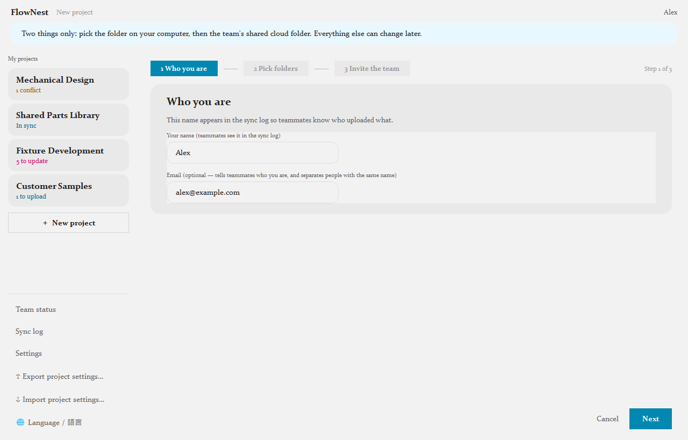
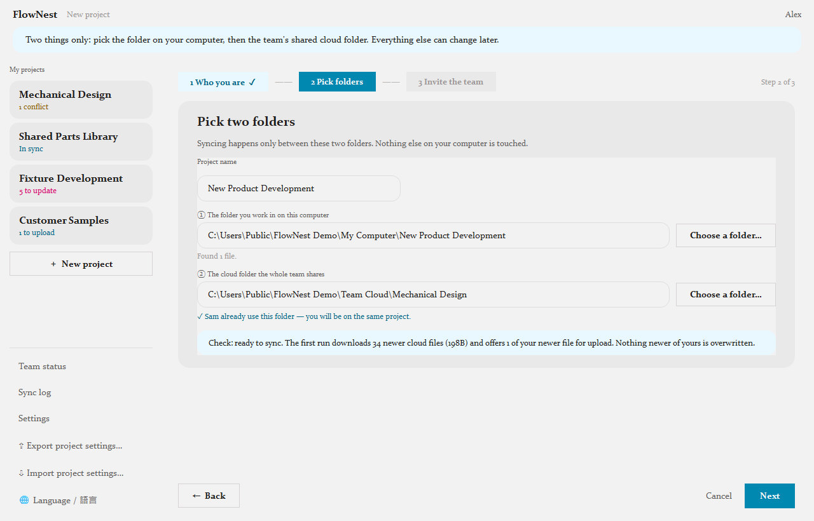
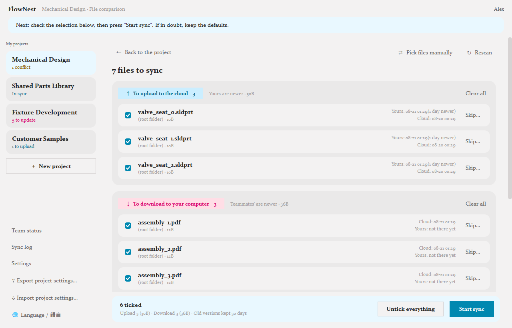
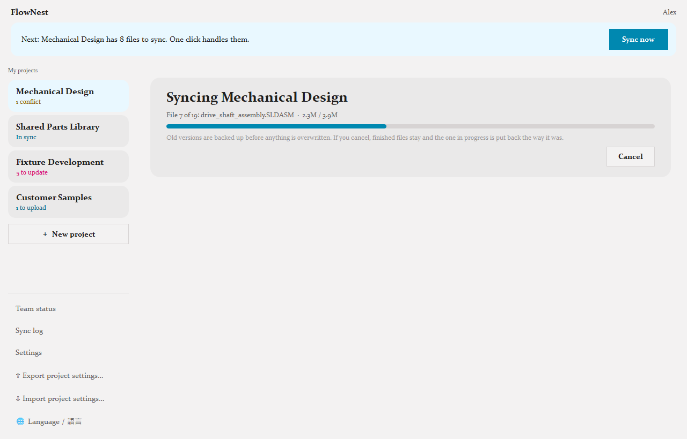
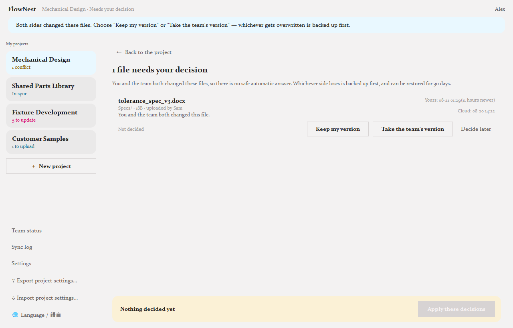
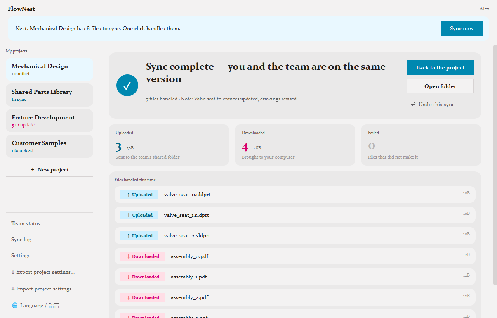
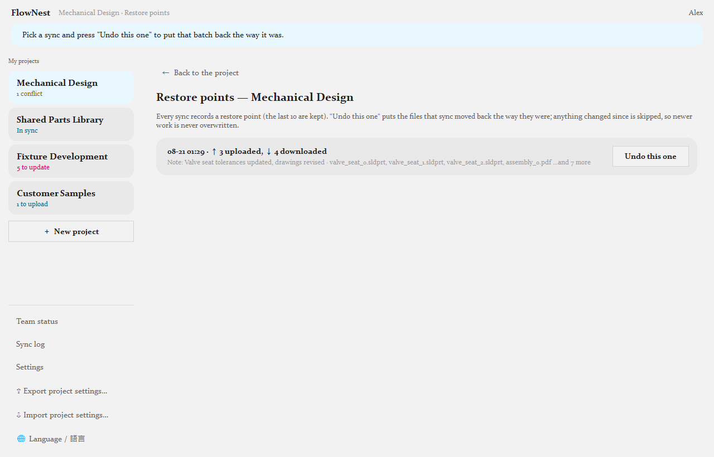
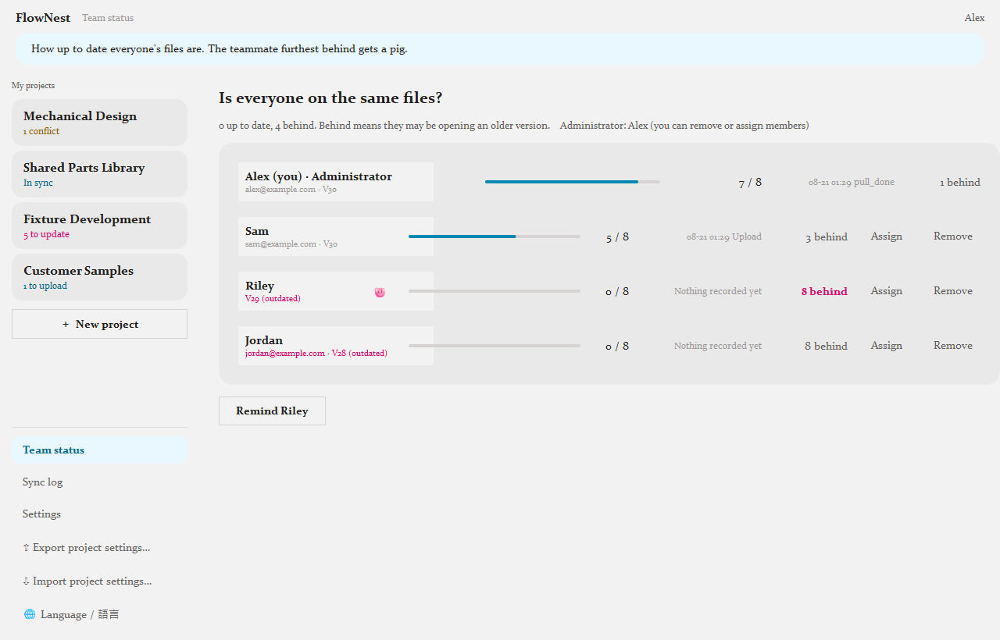

FLOWNEST · HOW TO USE IT
From installation to your first sync.
This page covers the everyday tasks. For every feature, see the user manual (PDF).
Before you start
- Computer: Windows 10 or 11. No installer and no administrator rights needed.
- Shared folder: a Google Drive folder your team shares, visible in File Explorer on every member's computer (for example through Google Drive for desktop).
- Serial number: one per computer, in the form
FLOW-XXXXX-XXXXX-XXXXX-XXXXX, sent with your trial email. No serial yet? Request a trial.
Install and activate
- Unzip the trial package and double-click
FlowNest_RV1.exe. The first start takes 5–10 seconds. - If SmartScreen appears, choose "More info", then "Run anyway".
- Enter your serial number. Paste it whole; dashes and letter case do not matter. You only enter it once.
The serial is tied to this computer. On a new computer, enter the same serial. A trial serial shows an on-screen reminder for its last two weeks.
Closing the window only minimises FlowNest to the notification area; it keeps watching and tells you when a teammate uploads. To exit completely, right-click the tray icon → Quit.
Create a project
A project is the work folder on your computer plus the cloud folder your whole team shares. Click "+ New project" on the left and follow three steps:
- Who you are: your name (what teammates see in the log) and, optionally, your email.
- Pick two folders: your local work folder, then the shared cloud folder. The screen reports live how many files were found, which teammates already use the folder, and what the first sync will do.
- Invite the team: send teammates the location of the shared folder. When they pick the same shared folder, they are on the same project. Each person's local folder can be anywhere.
Nothing is saved and no file is moved until you press Finish.


The main screen
FlowNest compares both sides by file size and modification time, and puts every file in one of four states:
- ↑ Upload
Your version is newer, or the team doesn't have the file yet.
- ↓ Download
A teammate's version is newer, or you don't have the file yet.
- ⚠ Both changed
You decide; the tool never handles it automatically.
- ✓ In sync
Both sides hold the same version.
The guidance strip at the top always says, in one sentence, what to do next. Your projects are on the left, each card showing how many files need attention.

Sync files
Three ways, depending on how much control you want:
- Sync everything: the everyday choice. All differences are handled in both directions, except files changed on both sides.
- Upload only / download only: one direction at a time, so you can check in between.
- File by file: press "See the files first" and confirm each file on the comparison screen.
Any sync that uploads first asks for an upload note describing what changed, which teammates see in the sync log. A download-only sync first lists the files that will arrive.
You can cancel at any point. Finished files stay, the file in progress returns to its original state, and no half-written file is left behind.


Changed on both sides
When a teammate uploads a new version, you don't download it, and you keep editing your older copy, the file shows "⚠ Changed on both sides". There is no safe automatic answer, so FlowNest shows both modification times, how far apart they are, the file sizes and who uploaded, and lets you choose:
- Keep my version: your file is uploaded; the team's copy is backed up first.
- Take the team's version: the team's file is downloaded; yours is backed up first.
- Decide later: nothing moves.
Apply your choices when you are done. Whichever side is overwritten is kept for 30 days.

Undo a mistake
Right after a sync: "↩ Undo this sync" on the result screen reverses the whole batch.
Noticed later: every sync records a restore point, and the last 10 are kept per project. Open "↩ Restore points" on the project screen, pick a sync and choose "Undo this one":
- Files that sync added are removed (backed up once more first).
- Files that sync overwrote are restored from backup.
- Files changed again after that sync are skipped, so newer work is never overwritten.
To take a single file back to an older version, open "Pick files manually" and choose a version from that file's history. Backups are kept for 30 days.


Team status
"Team status" at the bottom left lists everyone who has used the project: name, email, program version, last seen, and sync progress. The roster maintains itself; nobody has to register anyone.
The first person to use a project is its administrator, who can remove members or hand the role to someone else. A pig marks whoever is furthest behind, and "Remind" copies a ready-made message.
The roster controls who is listed, not Google Drive access. To cut someone off completely, also remove their access to the shared folder in Google Drive.

Full manual
Restore points, manual file picking, the sync log, settings, export and import, and every other feature are covered in the user manual.
If something goes wrong, use "💬 Report a problem…" in the program's sidebar, or email austin@speesso.com.